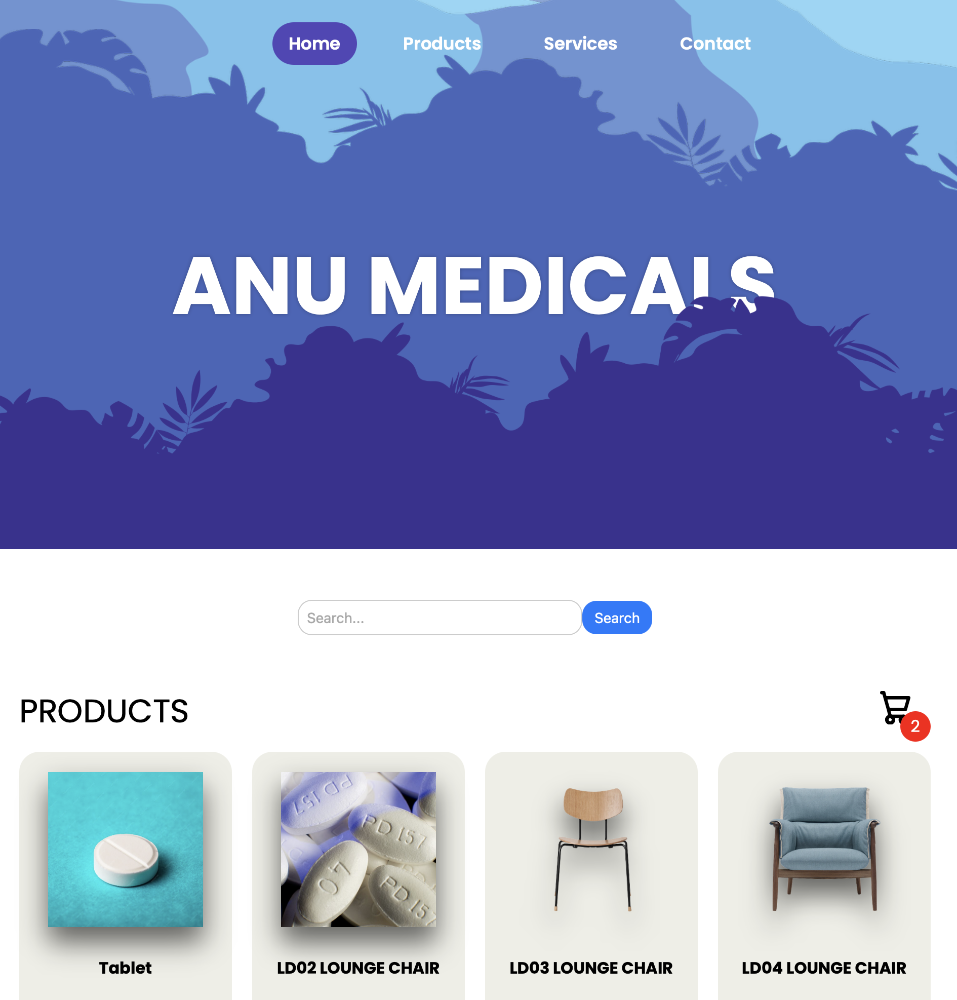
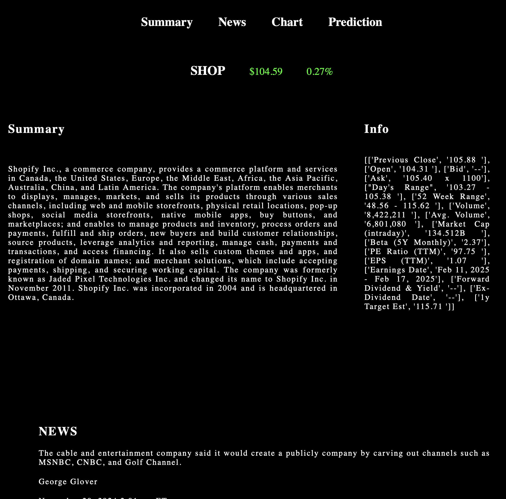
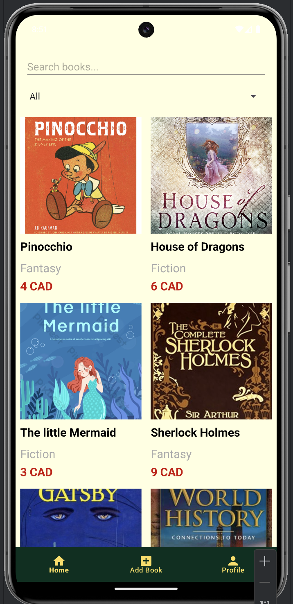
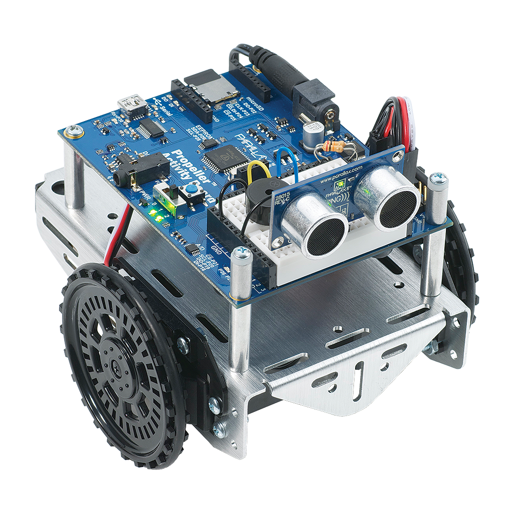

Hi,This is Thanesh
Developed a fully functional, web-based prototype application designed to simplify and streamline the process of purchasing medicines online. The application enables users to browse, search for, and buy any required medication with a single click, offering a user-friendly and efficient experience. The goal was to create a seamless and intuitive platform for users to order medicines quickly and securely.
Technologies Used:
• Database: Implemented a robust backend database (e.g., MySQL / Firebase / MongoDB) to store user data, medicine inventory, and purchase history.
• Search Functionality: Enables users to search for books based on title, author, category, or keywords.
• UI Designs: Designed responsive and interactive user interfaces using HTML5, CSS3, and modern UI/UX principles for an engaging experience.
• JavaScript: Developed dynamic functionality for search, filtering, shopping cart, and checkout using vanilla JavaScript and/or frameworks (e.g., React.js if applicable).
STOCKIE is an innovative web-based application designed to provide users with comprehensive tools for real-time stock tracking, market analysis, and future price prediction. The platform empowers users to stay informed about the latest market trends by offering live stock price updates, relevant financial news, and predictive insights powered by machine learning algorithms. Additionally, STOCKIE includes interactive data visualizations that help users analyze stock performance and make informed investment decisions.
Technologies Used:
• API Data Extraction: Integrated third-party APIs (e.g., Alpha Vantage, Yahoo Finance) to retrieve real-time stock prices and market data.
• Web Scraping: Employed web scraping techniques (e.g., BeautifulSoup, Scrapy) to gather financial news and additional stock-related information from various sources.
• Machine Learning: Implemented machine learning models (e.g., Linear Regression, LSTM) for stock price prediction based on historical data and trend analysis.
• Data Visualization: Utilized data visualization libraries like Chart.js, D3.js, or Plotly to create dynamic and interactive charts, enabling users to visualize trends and predictions effectively.
BookCycle is a mobile application designed to simplify the process of buying and selling books. The app offers an intuitive platform where users can list books for sale and search for books to purchase, making it easier for individuals to exchange reading materials within a community. The application includes comprehensive database functionalities to store and manage user and book data, a powerful search feature to quickly locate books, and user profiles to display relevant information.
Technologies Used:
• Database: Integrated backend database (e.g., Firebase Realtime Database or SQLite) for managing books and user data.
• UI Designs: Designed an intuitive and user-friendly mobile interface using XML layouts (for Android) or UI frameworks (Flutter/React Native).
• Data Visualization: Implemented basic data visualization for insights, using libraries such as MPAndroidChart (for Android) or built-in components to show trends and stats.
• Search Functionality: Enables users to search for books based on title, author, category, or keywords.
This project focuses on predicting human actions by analyzing motion and activity data obtained from labeled datasets. The primary objective is to process and interpret time-series data that represent various physical activities and predict human actions with high accuracy. By leveraging advanced machine learning techniques, the system identifies patterns in human behavior, making it useful for applications in surveillance, healthcare monitoring, sports analytics, and human-computer interaction.
Technologies Used:
• Feature Extraction: Extracted critical parameters from sensor data to distinguish between different actions.
• K-Means Clustering: Grouped unlabeled data points to identify patterns and improve training data quality.
• Machine Learning: Used supervised learning techniques for classification and prediction tasks.
• Gaze and Action Prediction: Combined gaze analysis with motion data for more robust and contextual action prediction.
This project involves designing and developing programmable robotic bots using platforms like Arduino Uno. These bots are tailored for tasks such as obstacle avoidance, line following, remote control via Bluetooth, voice commands, and maze-solving operations. Through hands-on experimentation, the project emphasizes integrating hardware components like sensors and actuators with microcontrollers, complemented by efficient programming for real-time interactions.
Technologies Used:
• Microcontroller Programming: Arduino Uno serves as the central unit, managing data from various sensors and controlling motors.
• Sensor Integration: Utilized ultrasonic sensors, infrared sensors, and other input devices to detect obstacles, lines, and environmental conditions.
• Motor Control: Implemented algorithms for precise control of DC motors and servo motors to enable accurate movement and navigation.




